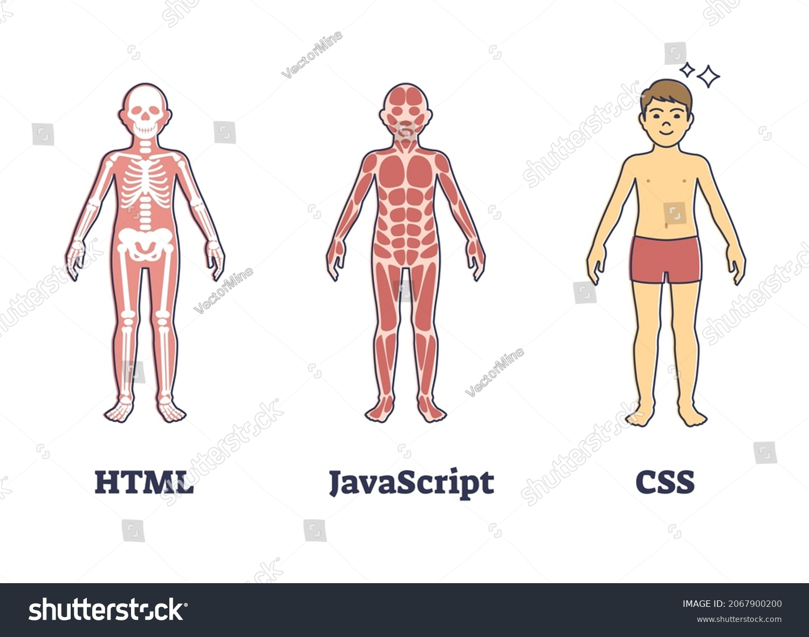
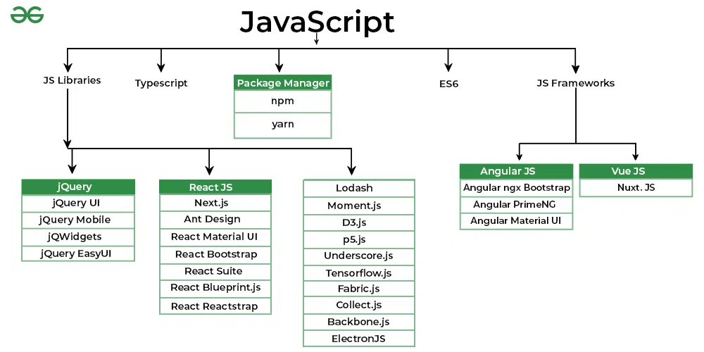

Fronted Development
CSS,
JAVASCRIPT
A Front-End Developer is someone who creates websites and web
applications. The difference between Front-End and Back-End is that
Front-End refers to how a web page looks, while back-end refers to how it
works. You can think of Front-End as client-side and Back-End as
server-side. The basic languages for Front-End Development are HTML, CSS,
and JavaScript.
A Fronted development is the development of the
graphical user interface
of a website through the use of
HTML,
CSS
and
Javascript
,so that user can view and interact with that website.
HTML ,CSS AND JAVASCRIPT WORK LIKE THIS IN FRONTRED DEVELOPMENT

-
HTML : The hypertext markup language or HTML is the
standard markup language for documents designed to be displayed in a web
server.
-
CSS : Cascading style sheets or CSS is a style sheet
language used for describing the presentation of a document written in a
markup language such as HTML or XML.
CSS TYPE
- CSS LIBRARY - Pure CSS
-
CSS FRAMEWORK - Bootstrap (Framework) ,Talawind
(Framework)
- CSS PREPROCESSOR - Sass (Preprocessor)
-
Javascript : JavaScript often abbreviated JS, is a programming
language that is one of the core technologies of the World Wide Web,
alongside HTML, CSS. It is use to add functionality in the website.

All copyright © reserved.
Go to top